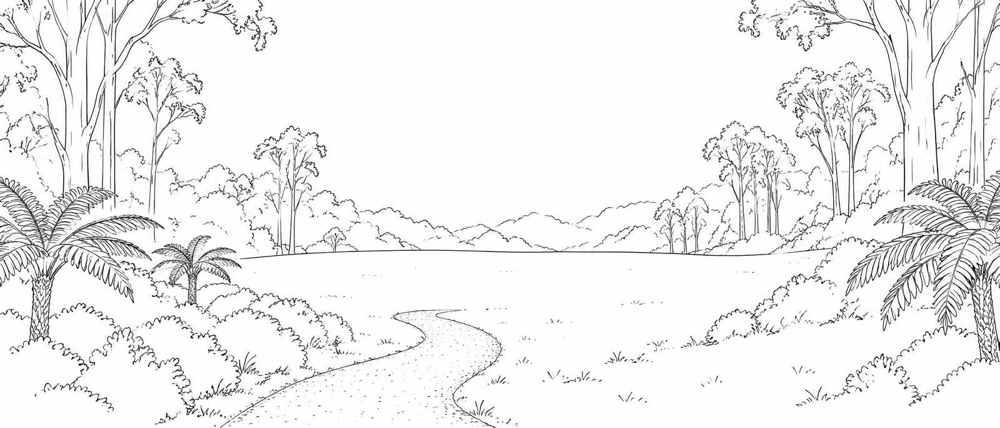
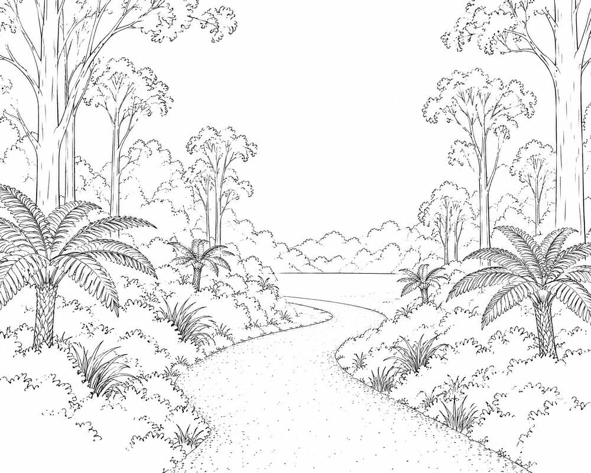
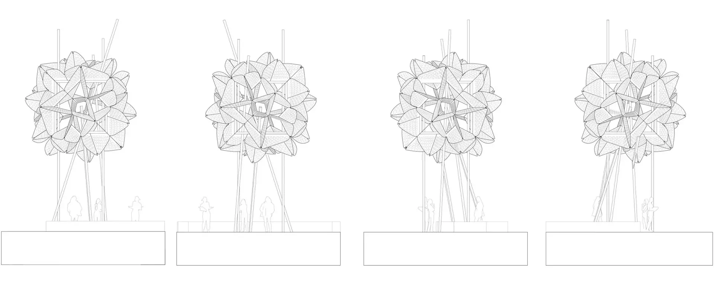
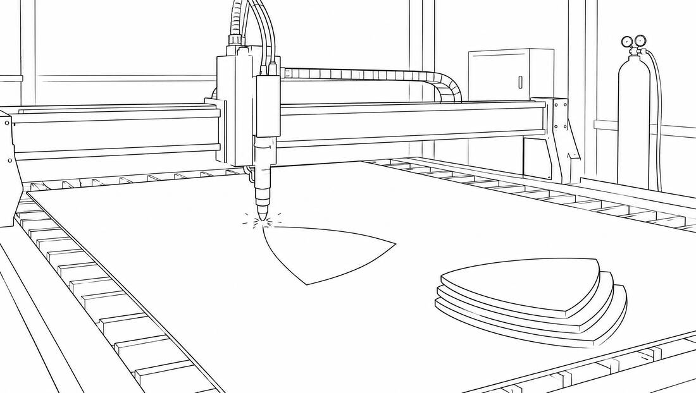
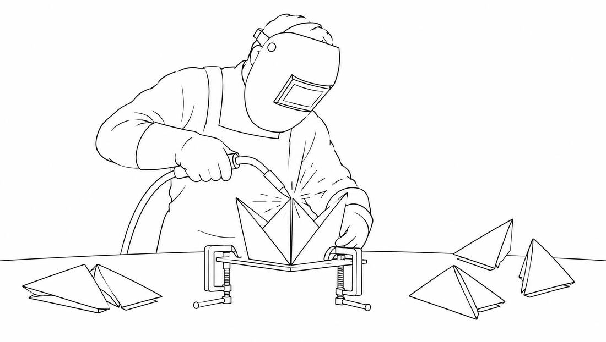
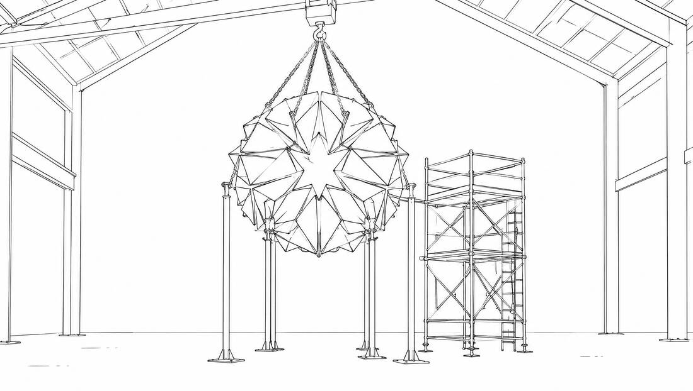
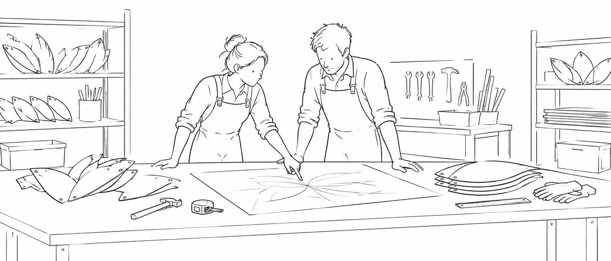
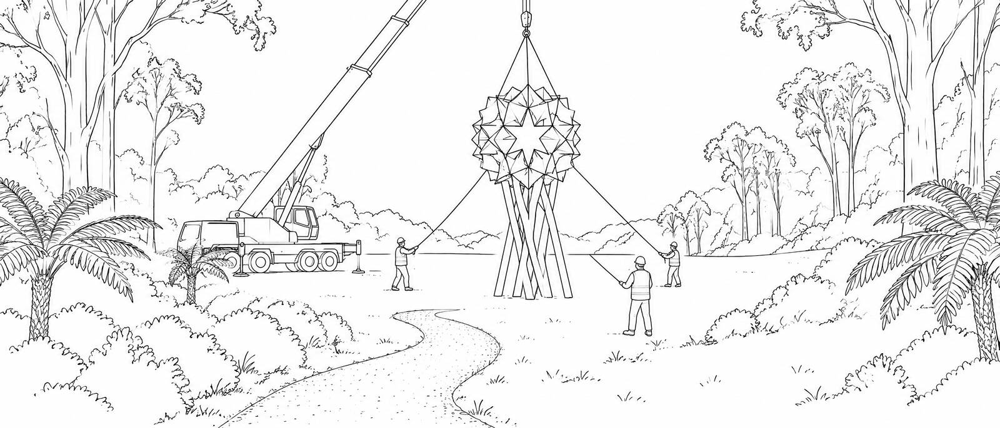
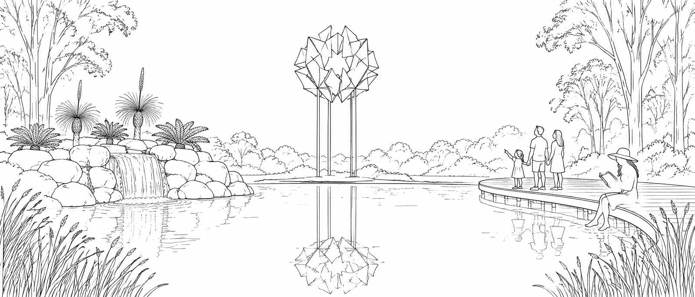

The Dandenong Ranges Botanical Garden at Olinda had paths. Just not somewhere to arrive.
Pinned: one scroll moves one chapterThis one started as an empty field. Here’s how we made its landmark.
This one started as an empty field. Here’s how we made its landmark.

The Dandenong Ranges Botanical Garden at Olinda had paths. Just not somewhere to arrive.
Pinned: one scroll moves one chapterThe garden needed a reason to walk all the way in.

The Waratah was first built in timber for the Chelsea Flower Show in 2013, as the centrepiece of the garden that won Best in Show. Reimagined for the Dandenong Ranges Botanic Garden, it had to last: rebuilt in Corten steel, outdoors, for good.
Sculpture design: Decibel Architecture





Timothea Jewell and Chris Vassallo
One line on how the Waratah was made to stand outdoors for decades: the design, the steel, the engineering, and the fit.
Placeholder copyFairfield workshop · 25+ years · 200+ projects · Engineering compliant · Australian made

Install day.

The Waratah, Chelsea Australian Garden, Dandenong Ranges Botanic Gardens, Olinda. Sculpture designed by Decibel Architecture. Garden by Phillip Johnson Landscapes with Parks Victoria. Fabricated and installed by Lump.
A designer or architect client on Lump building their design.Optional: designer quote
WHO WE’VE WORKED WITH
Parks Victoria · Decibel Architecture · Phillip Johnson Landscapes · RHS Chelsea Flower Show · Council · Council
Need council and developer names from Lump See all 200+ projects →Send us a photo of your space and a few details. We’ll come back to you with ideas.
★★★★★ 4.9 from 000 Google reviews → Check real rating and review count